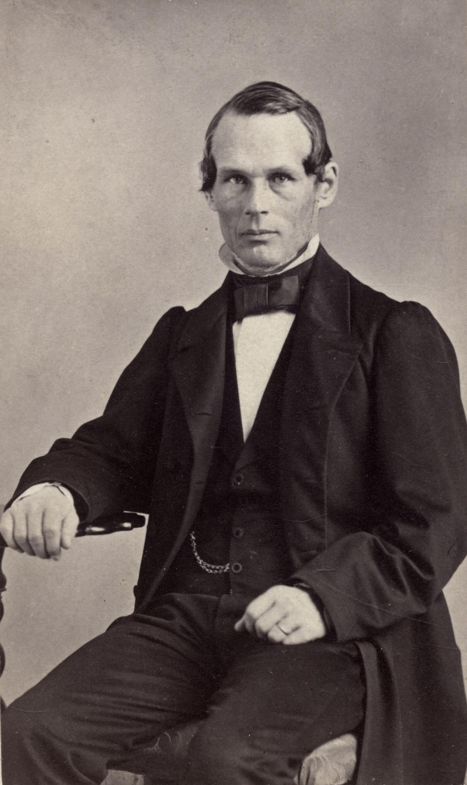

The angstrom (symbol Å) is a unit of length equal to 10–10 metres, or 0.1 nanometres. It is not part of the International System of Units (SI), but remains widely used in spectroscopy, atomic physics, and observational astronomy for expressing wavelengths of light and sizes of atoms.

Unknown photographer / Wikimedia Commons
The angstrom is especially convenient for visible light, because it places wavelengths in a range of four-digit integers: blue light sits around 4,400 Å, green around 5,500 Å, yellow around 5,800 Å, and red around 6,500 Å. The full visible range runs from about 4,000 to 7,000 Å. At shorter wavelengths, the near-ultraviolet spans 3,200–4,000 Å, extreme ultraviolet covers 100–900 Å, and X-rays extend below 100 Å. The Lyman limit, where hydrogen becomes ionised, falls at 912 Å.
At atomic scales the angstrom is equally handy: most atoms have radii of 1–2 Å, chemical bond lengths typically fall in the 1–3 Å range, and the Bohr radius of the hydrogen atom is about 0.529 Å.
History
The unit is named after Swedish physicist Anders Jonas Ångström (1814–1874), one of the founders of spectroscopy. In 1862 he identified hydrogen in the solar atmosphere, and in 1868 he published Recherches sur le spectre solaire, a landmark atlas mapping over 1,000 Fraunhofer lines in the solar spectrum. He expressed his wavelengths in units of 10–10 metres, and the solar physics community quickly adopted both the measurements and the unit.
In 1907 the precursor to the International Astronomical Union formalised the angstrom by tying it to the red cadmium emission line. The International Congress of Weights and Measures recognised the unit in 1927, and when the metre was redefined in 1960 using the krypton-86 spectral line, the angstrom was fixed at exactly 10–10 m.